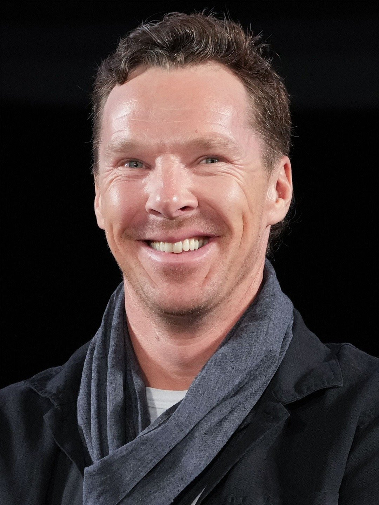

Benedict Cumberbatch
Biography
Benedict Timothy Carlton Cumberbatch was born and raised in London, England. His parents, Wanda Ventham and Timothy Carlton (born Timothy Carlton Congdon Cumberbatch), are both actors. He is a grandson of submarine commander Henry Carlton Cumberbatch, and a great-grandson of diplomat Henry Arnold Cumberbatch CMG. Cumberbatch attended Brambletye School and Harrow School. Whilst at Harrow, he had an arts scholarship and painted large oil canvases. It's also where he began acting. After he finished school, he took a year off to volunteer as an English teacher in a Tibetan monastery in Darjeeling, India. On his return, he studied drama at Manchester University. He continued his training as an actor at the London Academy of Music and Dramatic Art graduating with an M.A. in Classical Acting. By the time he had completed his studies, he already had an agent. Cumberbatch has worked in theatre, television, film and radio. His breakthrough on the big screen came in 2004 when he portrayed Stephen Hawking in the television movie Hawking (2004). In 2010, he became a household name as Sherlock Holmes on the British television series Sherlock (2010). In 2011, he appeared in two Oscar-nominated films - War Horse (2011) and Tinker Tailor Soldier Spy (2011). He followed this with acclaimed roles in the science fiction film Star Trek Into Darkness (2013), the Oscar-winning drama 12 Years a Slave (2013), The Fifth Estate (2013) and August: Osage County (2013). In 2014, he portrayed Alan Turing in The Imitation Game (2014) which earned him a Golden Globe, Screen Actors Guild Award, British Academy of Film and Television Arts and an Academy Award nomination for Best Actor in a Leading Role. Cumberbatch was appointed Commander of the Order of the British Empire (CBE) by Queen Elizabeth II in the 2015 Birthday Honours for his services to the performing arts and to charity. Cumberbatch's engagement to theatre and opera director Sophie Hunter, whom he has known for 17 years, was announced in the "Forthcoming Marriages" section of The Times newspaper on November 5, 2014. On February 14, 2015, the couple married at the 12th century Church of St. Peter and St. Paul on the Isle of Wight followed by a reception at Mottistone Manor. They have three sons, Christopher Carlton (born 2015), Hal Auden (born 2017), and Finn (born 2019). - IMDb Mini Biography By: Kad
Movies
- Movie 1 (2020)
- Movie 2 (2018)
- Movie 3 (2015)
Awards
- Best Actor - Film Festival 2021
- Outstanding Performance - Awards 2019